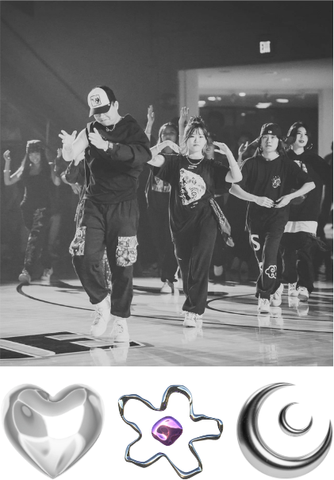
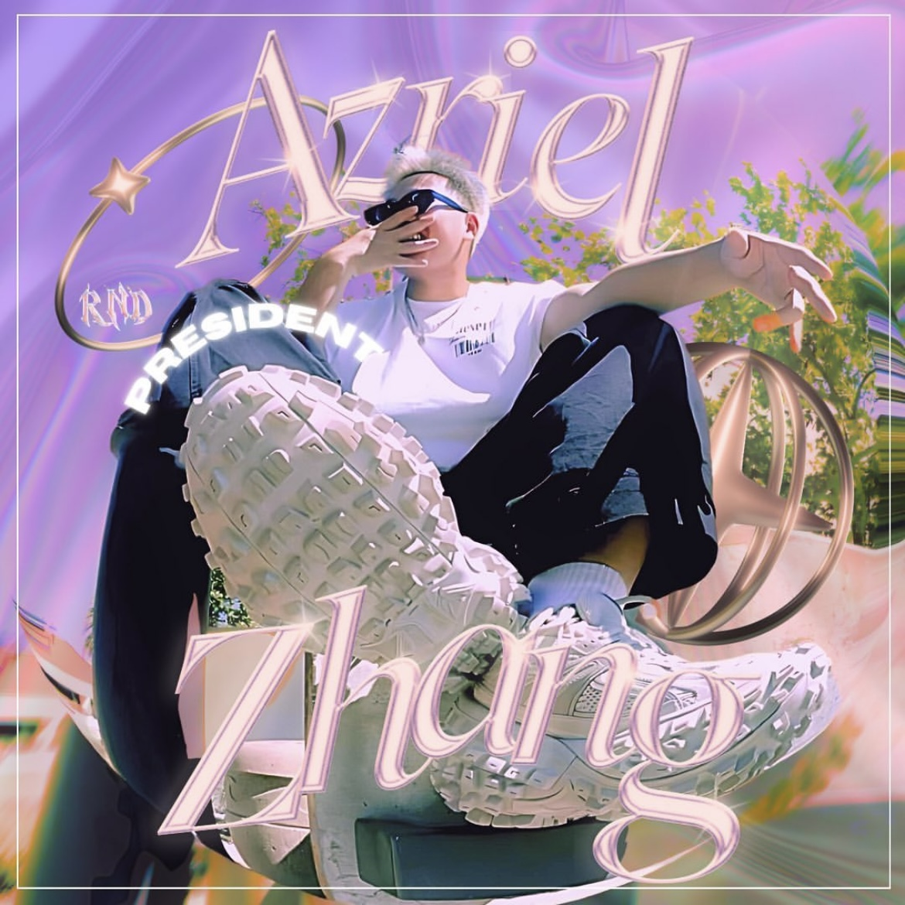

RnD (Rise and Dance) is a Pepperdine Community Dance Club.
The purpose of RnD Dance is to allow students to expand
and foster their skills in dance while participating in a
friendly, accepting, and engaging social activity. We
incorporate a wide range of dance styles such as hip-hop,
jazz, and K-pop styles in our routines.
Our community classes are open to everyone regardless of
dance level and our crew regularly trains and performs at
different shows.


Hey guys! I'm Azriel and I'm so excited to be serving as
President of RnD Dance this year.
Through my leadership of this exceptional team of officers,
I ensure that RnD remains a welcoming space where individuals
can express themselves, acquire new skills, and experience personal
growth. Most importantly, I want everyone to be able to have fun.
-Azriel
President
RND 2024
rnd.danceppd@gmail.com
Pepperdine University